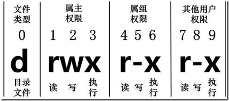

Linux ファイルの基本属性
Linux システムは典型的なマルチユーザーシステムであり、ユーザーによって立場が異なり、異なる権限を持っています。
システムの安全性を保護するため、Linux システムは異なるユーザーが同じファイル（ディレクトリファイルを含む）にアクセスする権限について異なる規定を設けています。
Linux では、通常以下の2つのコマンドを使用してファイルまたはディレクトリの所属ユーザーと権限を変更します。
- chown (change owner) ： 所属ユーザーとグループを変更します。
- chmod (change mode) ： ユーザーの権限を変更します。
下の図では、chown でユーザーを承認し、chmod でユーザーにドアを開ける権限を設定しています。

Linux では、以下のコマンドを使用できますllまたはls –lコマンドを使用して、ファイルの属性と、そのファイルが所属するユーザーおよびグループを表示します。例：
[root@www /]# ls -l total 64 dr-xr-xr-x 2 root root 4096 Dec 14 2012 bin dr-xr-xr-x 4 root root 4096 Apr 19 2012 boot ……
この例では、binファイルの最初の属性はdで表されます。dLinux では、そのファイルがディレクトリファイルであることを表します。
Linux では、最初の文字はこのファイルがディレクトリ、ファイル、リンクファイルなどであることを表します。
- の場合はdディレクトリです
- の場合は-ファイルです；
- の場合はlリンクドキュメント（link file）を表します；
- の場合はbデバイスファイル内の保存可能なインターフェースデバイス（ランダムアクセス装置）を表します；
- の場合はcデバイスファイル内のシリアルポートデバイス、例えばキーボード、マウス（一回読み取り装置）を表します。
次の文字では、3つを1組とし、すべてrwxの3つのパラメータの組み合わせです。そのうち、rは読み取り可能（read）を表し、wは書き込み可能（write）を表し、xは実行可能（execute）を表します。注意すべき点は、これらの3つの権限の位置は変わらず、権限がない場合はマイナス記号が表示され-るだけです。
各ファイルの属性は、左側の最初の部分の10文字によって決定されます（下図参照）。

左から右へ0-9これらの数字で表されます。
第 0桁目はファイルタイプを決定し、第1-3桁目は所有者（そのファイルの所有者）がそのファイルに対して持つ権限を決定します。
第4-6桁目は所有グループ（所有者と同じグループのユーザー）がそのファイルに対して持つ権限を決定し、第7-9桁目は他のユーザーがそのファイルに対して持つ権限を決定します。そのうち、第1、4、7桁目は読み取り権限を表し、もしr文字で表されていれば読み取り権限があり、もし-文字で表されていれば読み取り権限はありません；
第 2、5、8桁目は書き込み権限を表し、もしw文字で表されていれば書き込み権限があり、もし-文字で表されていれば書き込み権限はありません；第3、6、9桁目は実行権限を表し、もしx文字で表されていれば実行権限があり、もし-文字で表されていれば実行権限はありません。
Linuxファイルの所有者と所有グループ
[root@www /]# ls -l total 64 drwxr-xr-x 2 root root 4096 Feb 15 14:46 cron drwxr-xr-x 3 mysql mysql 4096 Apr 21 2014 mysql ……
ファイルにはそれぞれ特定の所有者、つまりそのファイルに対して所有権を持つユーザーがいます。
また、Linuxシステムでは、ユーザーはグループごとに分類され、1人のユーザーは1つまたは複数のグループに属します。
ファイル所有者以外のユーザーは、ファイルが所属するグループの同グループユーザーと他のユーザーに分けられます。
したがって、Linuxシステムは、ファイル所有者、ファイル所有者と同じグループのユーザー、他のユーザーに応じて異なるファイルアクセス権限を規定しています。
上記の例では、mysql ファイルはディレクトリファイルであり、所有者と所有グループはどちらも mysql です。所有者は読み取り、書き込み、実行の権限を持ち、所有者と同じグループの他のユーザーは読み取りと実行の権限を持ち、他のユーザーも読み取りと実行の権限を持ちます。
root ユーザーに関しては、一般的にファイルの権限は効きません。
ファイル属性の変更
1、chgrp：ファイルの所有グループを変更
構文：
chgrp [-R] 属组名 文件名
パラメータオプション
- -R：所有グループを再帰的に変更します。つまり、特定のディレクトリファイルの所有グループを変更する際に、-Rのパラメータを追加すると、そのディレクトリ内のすべてのファイルの所有グループが変更されます。
2、chown：ファイルの所有者を変更し、同時にファイルの所属グループも変更できます。
構文：
chown [–R] 所有者 文件名 chown [-R] 所有者:属组名 文件名
/root ディレクトリ（~）に入り、install.log の所有者を bin というアカウントに変更します：
[root@www ~] cd ~ [root@www ~]# chown bin install.log [root@www ~]# ls -l -rw-r--r-- 1 bin users 68495 Jun 25 08:53 install.log
install.log の所有者とグループを root に戻します：
[root@www ~]# chown root:root install.log [root@www ~]# ls -l -rw-r--r-- 1 root root 68495 Jun 25 08:53 install.log
3、chmod：ファイルの9つの属性を変更
Linuxファイル属性には2つの設定方法があります。1つは数字で、もう1つはシンボルです。
Linuxファイルの基本権限は9つあり、それぞれowner/group/others（所有者/グループ/その他）3つの身份にはそれぞれ独自のread/write/execute権限があります。
先ほど上で述べたデータを復習しましょう：ファイルの権限文字は次のとおりです：-rwxrwxrwx、この9つの権限は3つずつ1組になっています！そのうち、数字を使って各権限を表すことができます。各権限のスコア対応表は以下のとおりです：
- r:4
- w:2
- x:1
各身份（owner/group/others）の3つの権限（r/w/x）のスコアは合算する必要があります。例えば、権限が次の場合：-rwxrwx---スコアは次のようになります：
- owner = rwx = 4+2+1 = 7
- group = rwx = 4+2+1 = 7
- others= --- = 0+0+0 = 0
したがって、後で権限の変更を設定するとき、そのファイルの権限数字は770。権限を変更するコマンド chmod の構文は次のとおりです：
chmod [-R] xyz 文件或目录
オプションとパラメータ：
- xyz: 先ほど述べた数字タイプの権限属性であり、rwx属性数值の合計です。
- -R: 再帰的（recursive）に継続して変更を行い、サブディレクトリ内のすべてのファイルも変更します。
例えば、もし.bashrcこのファイルのすべての権限を有効に設定する場合、コマンドは次のとおりです：
[root@www ~]# ls -al .bashrc -rw-r--r-- 1 root root 395 Jul 4 11:45 .bashrc [root@www ~]# chmod 777 .bashrc [root@www ~]# ls -al .bashrc -rwxrwxrwx 1 root root 395 Jul 4 11:45 .bashrc
では、権限を次のように変更したい場合は-rwxr-xr--でしょうか？その場合、権限のスコアは [4+2+1][4+0+1][4+0+0]=754 になります。
シンボルタイプでファイル権限を変更
権限を変更するもう1つの方法があります。これまでの紹介から分かるように、基本的に9つの権限はそれぞれ次のとおりです：
- user：ユーザー
- group：グループ
- others：その他
では、次を使用できますu, g, oで3つの身份の権限を表します。
さらに、aを表し、allつまりすべての身份を意味します。読み書きの権限は次のように書けますr, w, x、つまり次の表のように見ることができます：
| chmod | u g o a |
+（追加） -（除去） =（設定） |
r w x | ファイルまたはディレクトリ |
ファイル権限を次のように設定する必要がある場合-rwxr-xr--、次を使用できますchmod u=rwx,g=rx,o=r ファイル名で設定します：
# touch test1 // 创建 test1 文件 # ls -al test1 // 查看 test1 默认权限 -rw-r--r-- 1 root root 0 Nov 15 10:32 test1 # chmod u=rwx,g=rx,o=r test1 // 修改 test1 权限 # ls -al test1 -rwxr-xr-- 1 root root 0 Nov 15 10:32 test1
一方、既存の他の権限を変更せずに権限を削除したい場合はどうでしょうか？例えば、全員の実行権限を削除する場合は、次のようにします：
# chmod a-x test1 # ls -al test1 -rw-r--r-- 1 root root 0 Nov 15 10:32 test1